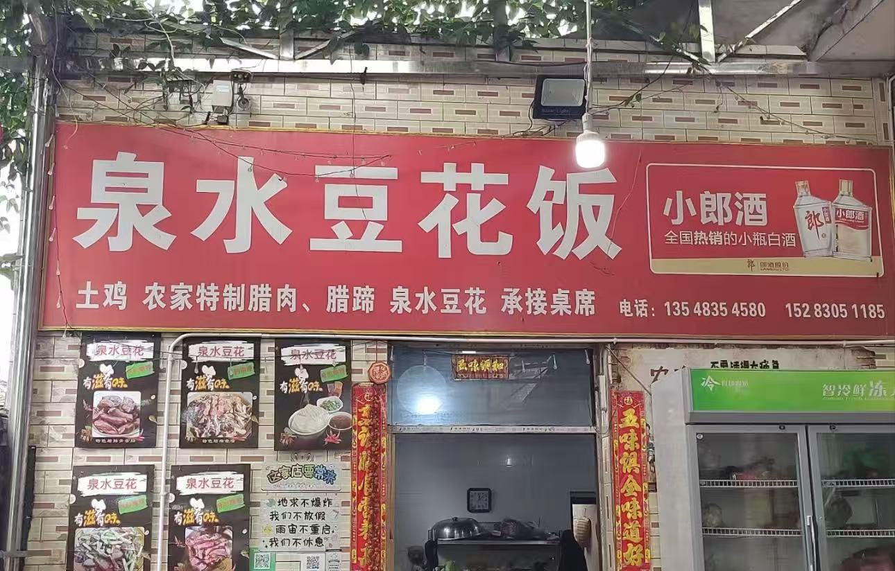
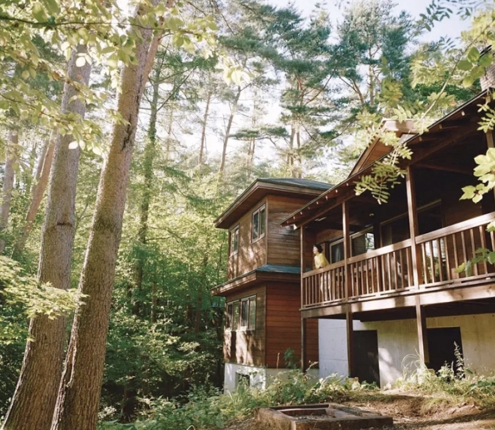
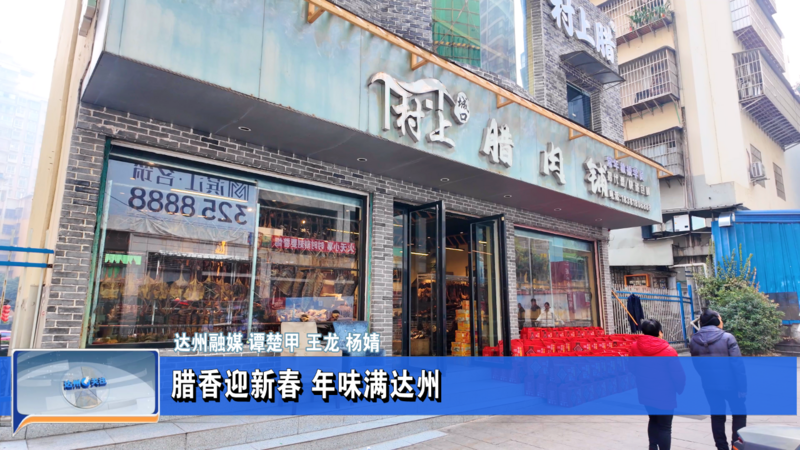

餐饮
方山泉水豆花饭
人均 ¥35
特色豆花饭、罗汉斋，食材新鲜，口味清淡。位于云峰寺旁，提供地道的方山素斋，食材均采自山中农家。
云峰寺东侧厢房 · 0830-8888888
游客评价
浅时光 ★★★★★ 素斋很清爽，爬完山吃一顿特别舒服。
山水客 ★★★★☆ 罗汉斋口味地道，推荐。
景区周边推荐饭店与住宿，安心出行

人均 ¥35
特色豆花饭、罗汉斋，食材新鲜，口味清淡。位于云峰寺旁，提供地道的方山素斋，食材均采自山中农家。
云峰寺东侧厢房 · 0830-8888888
浅时光 ★★★★★ 素斋很清爽，爬完山吃一顿特别舒服。
山水客 ★★★★☆ 罗汉斋口味地道，推荐。

¥280 起/晚
推窗即见山景，提供禅修体验课程。房间设计融合禅意与现代简约，早晨鸟鸣声中醒来，夜晚可观繁星。
方山景区步道中段 · 0830-6666666
Happy_Lin ★★★★★ 带爸妈来的，他们说这就是想要的心灵休息。
静心 ★★★★★ 早晨鸟鸣声中醒来，很治愈。

人均 ¥50
祖传秘方熏制，肥而不腻，满口留香。三十年历史老店，选用粮食猪肉、柏树枝丫慢火熏制。
景区北大门外餐饮街 · 0830-9999999
周末去哪儿 ★★★★☆ 腊肉很香，配豆花饭绝了。
老饕 ★★★★★ 三十年老店名不虚传。
¥450 起/晚
超大观景露台，拍摄日出的最佳位置。山庄接近山顶，视野极佳，房间均配备落地窗，顶楼提供观景望远镜。
方山景区接近山顶处 · 0830-7777777
追光者 ★★★★★ 为了看日出住的，非常值。
云海客 ★★★★★ 顶楼观景望远镜看星星绝了。